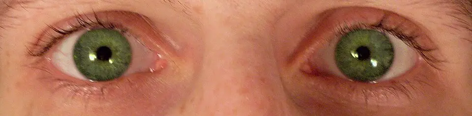

DX.8 — Problèmes liés aux médicaments (effets indésirables, interactions)
1. Définition
Un problème lié aux médicaments est un dommage ou un symptôme causé par un traitement. Il naît de quatre mécanismes. Le premier est un effet indésirableRéaction nocive et non voulue à un médicament pris à dose usuelle ; elle régresse en général à l'arrêt.. Le deuxième est une interaction médicamenteuseModification de l'effet d'un médicament par un autre, un aliment ou l'alcool. Elle passe par la cinétique (enzymes, élimination) ou par un effet additif sur la même cible.. Le troisième est un surdosagePrise d'une dose supérieure à la dose thérapeutique, volontaire ou accidentelle ; la toxicité dépend de la concentration plasmatique.. Le quatrième est un sevrageEnsemble de symptômes après l'arrêt ou la baisse brusque d'un médicament auquel l'organisme s'est adapté (tremblement, anxiété, tachycardie).. Le patient se sent malade sans qu'une maladie d'organe n'explique son état.
Le problème médicamenteux régresse en général à l'arrêt de l'agent en cause.
2. Épidémiologie (Suisse, puis Europe)
| Population et lieu | Résultat mesuré dans cette population et ce lieu (% ou OR) | Source |
|---|---|---|
| Patients avec plainte non spécifique aux urgences, adultes, revue systématique | Ces patients, surtout âgés, meurent plus souvent que ceux avec plainte spécifique (OR 2,50) ; 55 à 84 % sont hospitalisés. | 1 |
| Hôpital universitaire de Berne, 4792 réadmissions après sortie en 20122 | Parmi 1294 réadmissions urgentes, 270 cas liés à un effet indésirable : 21 % des réadmissions urgentes, 6 % de toutes les réadmissions à 30 jours2. Troubles digestifs 26 %, infections 19 %, troubles du système nerveux 10 %2. Classes en cause : antinéoplasiques et immunomodulateurs 35 %, antithrombotiques 25 %2. Seuls 8 cas (3 %) sont déclarés au système suisse2. | 2 |
| Urgences de l'Hôpital de l'Île, Berne, 2010–2011, 22 239 patients3 | 8,5 % prennent un diurétique, 2,5 % deux, 0,4 % trois ou quatre3. À l'admission : hyponatrémie 4 %, hypernatrémie 12 %, hypokaliémie 11 %, hyperkaliémie 4 %3. Les thiazidiques sont associés à l'hyponatrémie et à l'hypokaliémie. | 3 |
| 2157 adultes de 70 ans et plus, sept centres européens dont Zurich et Genève4 | Polymédication (5 médicaments ou plus) chez 27,2 % des participants, de 16,4 % à Genève à 60,8 % à Coimbra4. Âge plus élevé et nombre de comorbidités augmentent le risque ; les femmes en ont moins que les hommes (OR 0,65)4. | 4 |
Le risque croît avec l'âge et le nombre de maladies, et les femmes ont moins de polymédication (OR 0,65)4. Les troubles du sodium et du potassium prédisent le décès hospitalier, car ils en sont des facteurs de risque indépendants3. Seuls 3 % des cas sont déclarés (8 sur 270)2, d'où les enjeux de gravité et de sous-déclaration. Cet ordre n'est pas un classement de prévalence.
3. Physiopathologie
- Amorce (niveau moléculaire). Le médicament se lie à son récepteur, bloque une enzyme ou un transporteur, ou sature une voie de métabolisation. Une seconde molécule modifie la cinétique du médicamentAbsorption, distribution, métabolisme et élimination ; un inhibiteur enzymatique ou une insuffisance rénale en élèvent la concentration..
- Développement (niveau cellulaire). La cible touchée change la fonction de la cellule : canal ionique, récepteur ou voie du glutathion. Le même mécanisme agit dans des organes non visés.
- Installation (niveau tissulaire). L'organe cible défaille : cerveau sédaté, rein déplétant le sodium, foie nécrosé, muscle rigide.
- Maintien (niveau clinique). La concentration reste élevée si le foie ou le rein éliminent mal, si l'âge ralentit la clairance ou si la polymédication s'additionne.
Ce mécanisme explique le pronostic. Une défaillance d'organe liée au médicament régresse à l'arrêt, sauf nécrose hépatique ou hyponatrémie corrigée trop vite.
Le surdosage en paracétamol suit cette chaîne. Sous dosage normal, moins de 4 % du paracétamol passent par le cytochrome P450 et forment un intermédiaire réactif, que le glutathion détoxifie8. Après un surdosage massif, la quantité de métabolites toxiques augmente8, et l'acétylcystéine agit comme antidote en restaurant le taux de glutathion9. Chez l'adulte, environ 90 % du paracétamol absorbé sont excrétés par voie rénale en 24 heures, et la demi-vie plasmatique atteint environ 2,7 heures8. Après une injection parentérale, la demi-vie plasmatique de la naloxone est d'environ 1 à 1,5 heure11, et celle du flumazénil atteint en moyenne 50 à 60 minutes10.
| Lésion ou perturbation | Exploration qui la montre | Thérapeutique qui la corrige (mécanisme) |
|---|---|---|
| Dépression respiratoire par opioïdeMédicament qui active les récepteurs mu du système nerveux central ; il calme la douleur et déprime la respiration. | Fréquence respiratoire basse, myosis, saturation | Naloxon OrPhaDCI : naloxone (Naloxon OrPha, n° 56952). Classe : antidotes, antagoniste des opioïdes (ATC V03AB15). Groupe : antagonistes opioïdes purs ; chefs de file : naloxone, naltrexone. Indications (AIPS) : lever la dépression du système nerveux central et respiratoire due aux opioïdes ; surdosage opioïde connu ou suspecté. Posologie (AIPS) : surdosage chez l'adulte, 0,4 à 2 mg par voie i.v., i.m. ou s.c. ; répéter toutes les 2 à 3 minutes ; sans effet après 2 ou 3 injections, l'état n'est pas dû aux opioïdes11. Enfant : 0,01 mg/kg i.v., répétable toutes les 2 à 3 minutes11. Prudence chez la personne âgée atteinte de maladie cardiovasculaire. : il déplace l'opioïde du récepteur par antagonisme compétitif11 |
| Sédation par benzodiazépineMédicament qui renforce l'action du GABA sur son récepteur ; il sédate et relâche les muscles. | Somnolence, réponse au test d'antidote | Anexate®DCI : flumazénil (Anexate®, n° 48280). Classe : antidotes, antagoniste des benzodiazépines (ATC V03AB25). Groupe : antagonistes compétitifs du site benzodiazépine du récepteur GABA-A ; chef de file : flumazénil. Indications (AIPS) : neutraliser l'effet dépresseur central des benzodiazépines ; diagnostiquer ou exclure une intoxication par benzodiazépines. Posologie (AIPS) : soins intensifs, voie i.v. seulement, 0,3 mg en dose initiale ; nouvelles injections après 60 secondes jusqu'à 2 mg au total ; si la somnolence revient, perfusion de 0,1 à 0,4 mg par heure10. Contre-indications : benzodiazépine prise contre un état de mal épileptique ou une hypertension intracrânienne. : il occupe le site benzodiazépine du récepteur10 |
| Nécrose hépatique du surdosage en paracétamol | Concentration plasmatique, ASAT, ALAT | Fluimucil® 20 %DCI : acétylcystéine (Fluimucil® 20 %, n° 31954). Classe : antidotes (ATC V03AB23). Groupe : précurseur du glutathion ; chef de file : acétylcystéine. Indications (AIPS) : antidote lors d'intoxication aiguë au paracétamol ; défaillance hépatique aiguë après intoxication au paracétamol. Posologie (AIPS) : voie intraveineuse, schéma de Prescott en 3 perfusions successives sans pause : 150 mg/kg en 60 minutes, puis 50 mg/kg en 4 heures, puis 100 mg/kg en 16 heures ; dose totale 300 mg/kg en 21 heures ; poids plafond 110 kg chez l'obèse. : il restaure les réserves de glutathion9 |
| Hyperstimulation sérotoninergique | Clonus, hyperthermie, agitation (critères de Hunter) | Arrêt des agents sérotoninergiques, soins de soutien6 |
| Natriurèse excessive sous diurétique thiazidiqueDiurétique qui bloque la réabsorption du sodium et du chlore dans le tube distal ; il peut abaisser le sodium et le potassium. | Natrémie inférieure à 135 mmol/L7 | Arrêt ou changement du diurétique ; correction selon la cause |
| Interaction pharmacocinétique | Chronologie, dosage du médicament | Adapter la dose ou changer de molécule |
| Syndrome de sevrage | Tremblement, anxiété, tachycardie à l'arrêt | Reprise puis diminution lente de l'agent |
4. Démarche diagnostique
Le médecin recherche d'abord un toxidrome ou une défaillance d'organe qui menace la vie. Il établit ensuite la liste complète des médicaments pris.
Étape 1 — Chercher les drapeaux rouges. Dans la leçon DX.8 (problèmes liés aux médicaments), chaque drapeau est cliquable : sa fenêtre dit pourquoi il est rouge.
| Drapeau rouge | Diagnostic dangereux | Signe ou examen qui tranche | Piège classique | Conduite immédiate |
|---|---|---|---|---|
| 🚩 Somnolence avec respiration lenteUne fréquence respiratoire basse avec myosis évoque un opioïde ; sans myosis, une sédation mixte. L'arrêt respiratoire tue en minutes. | Intoxication aux opioïdes ou aux sédatifs | Fréquence respiratoire, pupilles, réponse à l'antidote | Mélange de plusieurs sédatifs et d'alcool | Libérer les voies aériennes, oxygène, antidote |
| 🚩 Ingestion de paracétamolMême sans symptôme, un surdosage en paracétamol détruit le foie en 1 à 2 jours8. Le patient paraît bien pendant la première phase8. | Intoxication au paracétamol | Concentration plasmatique au moins 4 h après la prise8 | Patient sans symptôme : traitement différé | Antidote selon le schéma, avis du centre toxicologique |
| 🚩 Hyperthermie avec rigiditéFièvre, clonus et agitation après l'ajout d'un agent sérotoninergique évoquent un syndrome sérotoninergique, qui peut devenir mortel6. | Syndrome sérotoninergique | Clonus inductible, hyperréflexie, mydriase | Prendre le tableau pour une infection | Arrêt des agents, soins de soutien, avis spécialisé |
| 🚩 Confusion sous diurétiqueUn diurétique peut abaisser le sodium ou le potassium. Une natrémie basse provoque une confusion et des convulsions3,7. | Hyponatrémie ou hypokaliémie sévères | Ionogramme, ECG | Attribuer la confusion à l'âge | Ionogramme urgent, arrêt du diurétique |
| 🚩 Saignement sous antithrombotiqueLes antithrombotiques causent 25 % des réadmissions par effet indésirable à Berne2. Un saignement occulte donne asthénie et pâleur. | Hémorragie médicamenteuse | Hémoglobine, examen des selles, hémodynamique | Une asthénie isolée | Arrêt de l'antithrombotique, avis urgent |
| 🚩 Éruption avec fièvreUne éruption étendue, des muqueuses touchées ou une fièvre après un nouveau médicament évoquent une réaction cutanée sévère. | Réaction cutanée sévère | Examen de la peau et des muqueuses | Éruption jugée banale | Arrêt du médicament, avis dermatologique |
| 🚩 Prise intentionnelleUn surdosage volontaire exprime une détresse psychique et expose à un nouvel acte ; il impose un avis psychiatrique. | Intoxication volontaire | Entretien, quantité et heure de la prise | Minimiser la quantité annoncée | Surveillance, avis psychiatrique |
Étape 2 — sans urgence, on suit cinq étapes.
- On établit la liste complète : ordonnance, automédication, plantes, alcool et drogues.
- Dater chaque début, chaque changement de dose et chaque arrêt.
- On examine le patient et on prescrit le bilan : ionogramme, créatinine, glycémie, ASAT, ALAT, ECG.
- On recherche une interaction et une surcharge d'élimination (rein, foie).
- Arrêter ou remplacer l'agent suspect, puis juger l'évolution : c'est le test diagnostique.
5. Anamnèse ciblée et drapeaux rouges
Les questions clés dressent la liste complète des produits et leur chronologie. Elles recherchent ensuite les arrêts récents, le rein et le foie, les diurétiques, l'alcool, la prise volontaire et les plantes.
Drapeaux rouges qui imposent l'urgence : respiration lente, coma, ingestion de paracétamol, hyperthermie avec clonus, confusion sous diurétique, saignement sous antithrombotique, prise volontaire. Chacun impose l'orientation vers un service d'urgence et l'avis du centre toxicologique.
6. Examen physique ciblé, région par région
Le médecin décrit d'abord le normal, puis le pathologique. La littérature lue ne donne ni sensibilité ni spécificité chiffrées pour ces signes : leur valeur reste qualitative.
L'examen ciblé du problème médicamenteux suit cet ordre : constantes ; yeux et neurologie ; peau et muqueuses ; puis abdomen et foie. Chaque fenêtre indique le normal, puis le signe toxique ou iatrogène et son geste.
Une photographie commentée montre le myosis d'origine opioïde.
7. Approche syndromique
7.1 Toxidrome opioïde ou sédatif
Parmi les signes fonctionnels figurent somnolenceBesoin de dormir ; les récepteurs mu ou GABA freinent le cerveau.. Parmi les signes physiques figurent respiration lenteGeste : compter la fréquence pendant une minute. Mécanisme : l'opioïde déprime le centre respiratoire11. À l'état normal, la respiration est calme et régulière., myosis serréGeste : éclairer l'œil et comparer. Mécanisme : l'opioïde stimule le noyau oculomoteur. À l'état normal, les pupilles sont moyennes et réagissent..
7.2 Syndrome sérotoninergique
Parmi les signes fonctionnels figurent agitationNervosité avec besoin de bouger ; la sérotonine excite le cerveau., tremblementSecousses fines et rapides des mains ; il traduit l'excitation neuromusculaire6.. Parmi les signes physiques figurent clonus inductibleGeste : dorsiflexion brusque du pied. Mécanisme : l'excès de sérotonine active les récepteurs de la moelle. À l'état normal, aucune secousse n'apparaît., hyperthermieGeste : prendre la température centrale. Mécanisme : la rigidité musculaire et la dysautonomie produisent de la chaleur. La température normale reste sous 38 °C.6. Les critères de Hunter servent au diagnostic.
7.3 Syndrome anticholinergique
Parmi les signes fonctionnels figurent bouche sècheSécheresse buccale ; le blocage muscarinique réduit la salive., rétention d'urineDifficulté à uriner ; le détrusor perd sa commande muscarinique.. Parmi les signes physiques figurent mydriaseGeste : éclairer l'œil. Mécanisme : le blocage muscarinique relâche le sphincter de l'iris6. À l'état normal, la pupille se contracte., globe vésicalGeste : percuter l'hypogastre. Mécanisme : la vessie ne se vide plus. À l'état normal, l'hypogastre est sonore..
7.4 Syndrome dysélectrolytique du diurétique
Parmi les signes fonctionnels figurent faiblesse musculairePerte de force ; le potassium bas altère l'excitabilité du muscle., nauséesEnvie de vomir ; l'hyponatrémie agit sur le centre du vomissement.. Parmi les signes physiques figurent confusionGeste : tester l'orientation et l'attention. Mécanisme : l'eau entre dans les neurones quand le sodium chute6. À l'état normal, le patient est orienté., pli cutanéGeste : pincer la peau sous la clavicule. Mécanisme : le diurétique appauvrit l'eau interstitielle. À l'état normal, la peau revient immédiatement..
7.5 Hépatotoxicité
Parmi les signes fonctionnels figurent nausées, vomissements, inappétence, malaise général dès le premier jour8. Parmi les signes physiques figurent hépatomégalieGeste : palper le bord du foie à l'inspiration. Mécanisme : la nécrose cellulaire gonfle le foie au deuxième jour. À l'état normal, on ne palpe pas le foie., ictèreGeste : regarder les sclères à la lumière naturelle. Mécanisme : la bilirubine s'accumule au troisième jour. À l'état normal, les sclères sont blanches..
Le surdosage en paracétamol évolue en trois phases. Le premier jour, le patient présente des nausées, des vomissements, des douleurs abdominales, une pâleur et une hypersudation8. Le deuxième jour, il paraît mieux, mais le foie grossit, et les transaminases, la bilirubine et la lactate déshydrogénase augmentent8. Le troisième jour, les transaminases s'élèvent fortement, un ictère et une hypoglycémie apparaissent, et un coma hépatique peut survenir8. Les premiers signes d'une lésion hépatique surviennent après 1 à 2 jours et atteignent leur maximum en 3 à 4 jours8.
8. Diagnostic positif et critères
Il n'existe aucun critère unique publié par une société savante pour la catégorie. Le diagnostic repose sur la chronologie, la plausibilité du mécanisme, l'amélioration à l'arrêt et l'exclusion des autres causes. Des critères existent pour certaines entités.
| Entité | Critère (source, année) | Ce qui ne suffit pas |
|---|---|---|
| Syndrome sérotoninergique | Excitation neuromusculaire, dysautonomie et conscience altérée après un traitement sérotoninergique nouveau ou modifié (revue 2023) ; critères de Hunter6 | Une fièvre isolée ; la chronologie seule |
| Intoxication au paracétamol | Dose de 7,5 à 10 g chez l'adulte ou de 140 à 200 mg/kg chez l'enfant ; concentration plasmatique supérieure à 200 µg/mL à 4 h, 100 µg/mL à 8 h, 50 µg/mL à 12 h et 30 µg/mL à 15 h (AIPS)8 | L'absence de symptôme : elle ne protège pas |
| Hyponatrémie | Natrémie inférieure à 135 mmol/L (recommandation européenne, 2014)7 | Une valeur isolée sans osmolalité ni volume |
La simple association dans le temps ne prouve pas la cause. L'amélioration à l'arrêt, la reprise suivie d'une rechute et l'exclusion d'autres causes renforcent le lien.
9. Examens complémentaires
9.a Gold standard.
Il n'existe aucun examen unique qui serve de gold standard pour la catégorie. Le gold standard est clinique : la liste des médicaments, la chronologie et l'effet de l'arrêt. Pour le paracétamol, la concentration plasmatique mesurée au moins 4 h après la prise est l'examen décisif8.
9.b Première intention.
On prescrit d'abord : liste des médicaments et chronologie ; ionogramme et créatinine ; glycémie capillaire et ASAT, ALAT ; concentration plasmatique du paracétamol ; puis ECG.
La fenêtre seuils du paracétamol indique les concentrations plasmatiques de paracétamol qui provoquent des lésions hépatiques à issue fatale. L'hépatotoxicité dépend directement de la concentration plasmatique8.
9.c Alternatives. Chez la femme enceinte, les dosages sanguins restent possibles, et le médecin demande l'avis du Centre suisse d'information toxicologique8. Chez l'enfant, la dose se calcule par kilogramme. Pour le paracétamol, une clairance de la créatinine de 50 mL/min ou moins impose un intervalle plus long et une dose maximale réduite8. Une imagerie n'est utile que pour une complication : on suit alors les règles de grossesse, d'allergie aux produits iodés et de dispositif non compatible IRM.
9.d Deuxième intention.
En deuxième intention, on demande : dosage sanguin du médicament suspect, analyse toxicologique urinaire puis avis du Centre suisse d'information toxicologique.
10. Arbre décisionnel
- Si la respiration est lente avec un myosis → l'opioïde est probable → on donne la naloxone et de l'oxygène, puis on surveille le patient.
- Si le coma survient sans myosis après un sédatif → une benzodiazépine est possible → on soutient les fonctions vitales et on donne le flumazénil si l'indication existe.
- Si le patient a ingéré du paracétamol → on dose la concentration plasmatique à 4 h et on donne l'antidote selon la courbe8.
- Si une hyperthermie et un clonus suivent un agent sérotoninergique → on arrête l'agent, on soutient le patient et on demande un avis spécialisé.
- Si une confusion survient sous diurétique → on demande un ionogramme et on corrige selon la cause.
- Si les constantes sont stables → on établit la liste des médicaments, on arrête l'agent suspect et on réévalue le patient à court terme.
11. Prise en charge selon les recommandations suisses
11.A But thérapeutique.
Le but est de rétablir les fonctions vitales, d'éliminer la cause et d'éviter la récidive. Pour le paracétamol, l'antidote vise à protéger le foie : on le débute si possible dans les 8 premières heures8, et il garde un effet protecteur après 16 heures8. Pour la naloxone, le but est une fonction respiratoire stable et une vigilance adéquate11. Pour le flumazénil, la dose totale ne dépasse pas 2 mg en soins intensifs10. Le patient doit retrouver son traitement indispensable, sans l'agent en cause.
11.B Moyens.
Urgence — conduite chronologique : dépression respiratoire par opioïde — dans les premières minutes, on libère les voies aériennes, on ventile et on donne de l'oxygène. Ensuite, on injecte la naloxone (Naloxon OrPha®) par voie i.v., i.m. ou s.c., à la dose de 0,4 à 2 mg chez l'adulte11. Puis on répète l'injection toutes les 2 à 3 minutes11. Si 2 ou 3 injections restent sans effet, l'état n'est probablement pas dû aux opioïdes, et le médecin cherche une autre cause11. Pendant les heures suivantes, on surveille le patient, car la demi-vie de la naloxone est courte et la somnolence peut revenir11. Dans les jours suivants, on cherche l'origine de la prise et on revoit la prescription.
Urgence — conduite chronologique : intoxication par benzodiazépine — immédiatement, on assure les voies aériennes et la ventilation. Si le diagnostic est incertain, on injecte le flumazénil (Anexate®) par voie i.v. en soins intensifs : 0,3 mg, puis de nouvelles doses après 60 secondes jusqu'à 2 mg au total10. Si la somnolence revient, on perfuse 0,1 à 0,4 mg par heure10. On n'utilise pas le flumazénil chez l'épileptique traité de longue date, car le risque de convulsions augmente10. De même, on s'en abstient en cas de signes d'intoxication grave par un antidépresseur tricyclique ou tétracyclique, parce que la neutralisation des benzodiazépines peut alors démasquer des convulsions et des arythmies10. Si l'état ne s'améliore pas, le tableau n'est probablement pas dû aux benzodiazépines, et le médecin cherche une autre cause.
Urgence — conduite chronologique : surdosage en paracétamol — dès la suspicion, on traite sans attendre un symptôme8. On pratique un lavage gastrique seulement dans les 1 à 2 premières heures, puis on donne du charbon actif8. Au moins 4 h après la prise, on dose le paracétamol et les transaminases8. Comme antidote, on administre l'acétylcystéine (Fluimucil® 20 %) par voie i.v. : 150 mg/kg en 60 minutes, puis 50 mg/kg en 4 heures, puis 100 mg/kg en 16 heures9. Dans les jours suivants, on répète les tests hépatiques toutes les 24 h, et la dialyse n'aide pas8.
Urgence — conduite chronologique : syndrome sérotoninergique — immédiatement, on arrête tous les agents sérotoninergiques6. Dans les minutes suivantes, on mesure la température et les signes vitaux, on hydrate et on refroidit en cas d'hyperthermie. Pendant les heures suivantes, on poursuit les soins de soutien en milieu surveillé et on demande un avis spécialisé6. Dans les jours suivants, on ne réintroduit pas l'association en cause6.
Hors urgence, on procède dans l'ordre suivant.
- Mesures générales. Arrêter ou remplacer l'agent suspect si cela est sûr. Hydrater le patient et vérifier l'ionogramme. On supprime ainsi la cause avant tout traitement.
- Traitement de la cause. Corriger le trouble électrolytique selon l'étiologie7. Remplacer le médicament en conservant l'indication du patient.
- Traitement symptomatique. paracétamol contre la douleur : 500 à 1000 mg par prise, au plus 4000 mg par jour ; éviter les autres produits qui en contiennent8.
- Non pharmacologique. Revue de médication avec les critères STOPP/START chez le sujet âgé5, pilulier, plan de médication écrit, éducation du patient.
Le tableau suivant résume les quatre médicaments de la catégorie selon l'information professionnelle suisse (AIPS).
| Molécule, spécialité et n° Swissmedic | Dose, voie et durée | Contre-indication majeure | Extrait AIPS à retenir |
|---|---|---|---|
| Paracétamol, Dafalgan® (n° 47503) | Adulte et enfant de plus de 40 kg : 500 à 1000 mg par prise, voie orale, intervalle de 4 à 8 h, au plus 4000 mg par jour8. Enfant de 9 à 12 ans : au plus 2000 mg par jour8. | Troubles fonctionnels hépatiques graves, hypersensibilité, maladie de Gilbert8. | Les inducteurs enzymatiques aggravent l'hépatotoxicité8. |
| Naloxone, Naloxon OrPha (n° 56952) | Adulte : 0,4 à 2 mg par voie i.v., i.m. ou s.c., à répéter toutes les 2 à 3 minutes ; enfant : 0,01 mg/kg par voie i.v.11. | Hypersensibilité au principe actif ou à un excipient11. | Chez le patient dépendant aux opioïdes, une levée brusque des effets risque de provoquer un sevrage aigu11. |
| Flumazénil, Anexate® (n° 48280) | Soins intensifs : 0,3 mg par voie i.v., puis nouvelles doses après 60 secondes jusqu'à 2 mg au total ; perfusion de 0,1 à 0,4 mg par heure si la somnolence revient10. | Benzodiazépine prise contre un état de mal épileptique ou pour contrôler la pression intracrânienne10. | Le flumazénil est déconseillé chez l'épileptique traité de longue date par benzodiazépines10. |
| Acétylcystéine, Fluimucil® 20 % (n° 31954) | Voie i.v. : 150 mg/kg en 60 minutes, puis 50 mg/kg en 4 heures, puis 100 mg/kg en 16 heures, soit 300 mg/kg en 21 heures9. | En intoxication dangereuse au paracétamol, l'antidote reste possible sous surveillance même en cas d'hypersensibilité9. | Une réaction anaphylactoïde survient chez 17 % des patients9. |
La voie i.v. agit le plus vite. La voie i.m. agit plus lentement mais plus longtemps, donc on la choisit seulement si la voie i.v. est impossible11. Si l'on ne note aucune amélioration après 10 mg de naloxone, la dépression respiratoire n'est pas due à un opioïde11. La buprénorphine et les fortes doses d'opioïdes agonistes-antagonistes font exception à cette règle11. Après la buprénorphine, l'effet de la naloxone reste limité et exige 5 à 10 mg11. Lorsque la réponse est insuffisante, on associe la respiration artificielle11.
Les interactions du paracétamol expliquent plusieurs problèmes liés aux médicaments. Le tableau suivant les rassemble selon l'AIPS.
| Médicament associé | Effet décrit | Conduite proposée |
|---|---|---|
| Phénobarbital, carbamazépine, isoniazide, rifampicine | Ces inducteurs enzymatiques aggravent l'hépatotoxicité du paracétamol8. | On associe avec prudence8. |
| Phénytoïne | Elle réduit l'efficacité du paracétamol et augmente ses métabolites toxiques8. | On évite la prise excessive ou chronique et on surveille les signes d'hépatotoxicité8. |
| Probénécide | Il réduit environ de moitié la clairance du paracétamol8. | On réduit la dose de paracétamol8. |
| Warfarine et autres coumarines | Une prise quotidienne prolongée renforce l'effet anticoagulant et le risque d'hémorragie8. | On surveille de près le rapport international normalisé (INR) pendant l'association et 1 semaine après son arrêt8. |
| Flucloxacilline | L'association peut provoquer une acidose métabolique à trou anionique augmenté8. | On associe avec prudence, surtout chez les patients à risque8. |
| Zidovudine, chloramphénicol, cholestyramine | La zidovudine renforce le risque de neutropénie ; le paracétamol multiplie par cinq la demi-vie du chloramphénicol ; la cholestyramine réduit l'absorption du paracétamol8. | On adapte la prescription à chaque association8. |
Le médecin informe le patient des effets indésirables suivants, décrits dans l'AIPS.
| Médicament | Effets indésirables à annoncer |
|---|---|
| Paracétamol | Des réactions cutanées graves (pustulose exanthématique aiguë généralisée, syndrome de Stevens-Johnson, nécrolyse épidermique toxique) peuvent entraîner le décès ; on interrompt le médicament dès la première réaction cutanée8. L'alcool accroît la toxicité hépatique8. |
| Naloxone | Les nausées sont très fréquentes ; les vomissements, les vertiges et les céphalées sont fréquents11. Chez le patient atteint d'une maladie cardiovasculaire, des arythmies, une hypertension et, très rarement, un œdème pulmonaire peuvent survenir11. |
| Flumazénil | L'obnubilation (10 %) et les vomissements (11 %) sont très fréquents10. Une injection rapide peut provoquer un sevrage chez le patient traité au long cours ; une injection i.v. lente de 5 mg de diazépam ou de midazolam le fait disparaître10. |
| Acétylcystéine | Une éruption, une urticaire, un prurit et une dyspnée surviennent surtout pendant le bolus initial9. L'asthme et l'hypervolémie augmentent le risque de réaction anaphylactoïde9. |
Situations spéciales. Chez la femme enceinte, le paracétamol reste utilisable si nécessaire, à la dose efficace la plus faible, pour la durée la plus courte8. La naloxone ne s'emploie pas pendant la grossesse sauf nécessité absolue, car elle peut provoquer un sevrage chez le nouveau-né11. On évite le flumazénil pendant les premiers mois de la grossesse, sauf nécessité absolue10. La prudence est de mise avec l'acétylcystéine pendant la grossesse9. Pendant l'allaitement, le paracétamol passe dans le lait, sans conséquence durable connue pour le nourrisson8. Chez l'enfant, la dose du paracétamol se calcule par poids, avec au plus 2000 mg par jour de 9 à 12 ans8. La naloxone se donne alors à 0,01 mg/kg par voie i.v.11. Chez le sujet âgé atteint d'une maladie cardiovasculaire, on emploie la naloxone avec prudence11. Chez l'insuffisant hépatique, le flumazénil, métabolisé surtout dans le foie, exige un ajustement prudent de la dose10. Le paracétamol est contre-indiqué en cas d'insuffisance hépatique sévère, et la dose journalière ne dépasse pas 2 g en cas d'hépatopathie légère à modérée, d'alcoolisme chronique ou de cachexie8. Chez l'insuffisant rénal dont la clairance de la créatinine atteint 50 mL/min ou moins, on prolonge l'intervalle minimal entre les prises de paracétamol8.
Social et professionnel. Le médecin peut remettre un certificat d'incapacité de travail si nécessaire. L'assurance-maladie (LAMal) prend en charge les soins ; l'assurance-accidents (LAA) couvre l'accident ; l'assurance-invalidité (LAI) vise l'incapacité durable. Le patient ne conduit pas sous sédatif ou avec une somnolence.
11.C Surveillance.
On surveille la fréquence respiratoire, la conscience et la température après l'antidote. On suit l'ionogramme sous diurétique3 et on répète les tests hépatiques toutes les 24 h après un surdosage en paracétamol8. Une somnolence qui revient impose une nouvelle injection de naloxone11, car l'effet des opioïdes peut durer plus longtemps que celui de la naloxone11. Après une réponse satisfaisante, on garde le patient sous surveillance étroite11. Pour le flumazénil, on prolonge la période d'observation si la fonction hépatique est altérée10. Pour l'acétylcystéine i.v., la surveillance médicale est stricte, car des réactions anaphylactoïdes surviennent chez 17 % des patients, surtout pendant le bolus initial9. En cas de surdosage d'acétylcystéine, on arrête la perfusion et on traite les symptômes9.
11.D Pronostic, critères de sortie et recherche.
Le pronostic est bon si l'agent est arrêté à temps. Les transaminases se normalisent en 1 à 2 semaines dans la plupart des cas après un surdosage en paracétamol traité, mais une transplantation hépatique peut devenir nécessaire dans les cas très graves8. Le patient sort lorsque tous les critères suivants sont réunis.
- Les constantes sont stables.
- La conscience est normale.
- La somnolence ne revient plus après l'antidote, car l'effet des opioïdes peut durer plus longtemps que celui de la naloxone11.
- Après un surdosage en paracétamol, les tests hépatiques répétés toutes les 24 h sont rassurants8.
- Le plan de médication est clair.
- Le suivi est fixé.
- Après une prise volontaire, l'avis psychiatrique est obtenu.
12. Prévention
- Primaire. Prescrire seulement ce qui est indiqué et réviser la liste avec les critères STOPP/START chez les plus de 65 ans5. On limite la polymédication, fréquente chez les plus de 70 ans4.
- Secondaire. On contrôle l'ionogramme sous diurétique. Déclarer les effets indésirables : seuls 3 % des cas le sont à Berne2.
- Tertiaire. Après un épisode, noter l'agent en cause dans le dossier, remettre une carte au patient et organiser le suivi de la médication.
- Éducation du patient. On met le patient en garde contre l'absorption régulière et prolongée d'analgésiques sans prescription médicale, et il consulte un médecin en cas de douleurs persistantes8. L'alcool augmente la toxicité hépatique du paracétamol, surtout en cas de carence alimentaire8. Pour un enfant, les parents consultent rapidement si la fièvre est forte ou si l'état se détériore8.
13. Points clés
Le médecin demande toujours la liste complète des médicaments, y compris sans ordonnance, avant de conclure à une cause non médicamenteuse.
La respiration lente avec myosis impose la naloxone ; sans effet après 2 ou 3 injections, l'état n'est pas dû aux opioïdes11.
Un surdosage en paracétamol impose l'antidote même sans symptôme, avec dosage plasmatique au moins 4 h après la prise8.
Un patient sous diurétique et confus reçoit d'abord un ionogramme : la natrémie inférieure à 135 mmol/L définit l'hyponatrémie7.
Le médecin arrête l'agent suspect et juge l'évolution : l'amélioration à l'arrêt est le meilleur test diagnostique.
14. Pièges et questions fréquentes à l'examen fédéral suisse
Question 1. Quelle dose de naloxone donne-t-on à l'adulte en cas de surdosage opioïde ?
Réponse : 0,4 à 2 mg i.v., i.m. ou s.c., répétable toutes les 2 à 3 minutes11.
Question 2. La naloxone n'agit pas après 2 ou 3 injections : que conclure ?
Réponse : L'état n'est pas dû aux opioïdes seuls ; chercher une autre cause11.
Question 3. Quelle est la dose maximale de paracétamol chez l'adulte ?
Réponse : 4000 mg par jour (AIPS)8.
Question 4. À quel moment dose-t-on le paracétamol après une ingestion ?
Réponse : Au moins 4 h après la prise8.
Question 5. Un patient sans symptôme a pris du paracétamol : faut-il attendre ?
Réponse : Non : une prise en charge médicale est nécessaire même sans symptôme8.
Question 6. Quel est le schéma de l'acétylcystéine i.v. ?
Réponse : 150 mg/kg en 60 minutes, 50 mg/kg en 4 heures, 100 mg/kg en 16 heures, soit 300 mg/kg en 21 heures9.
Question 7. Le flumazénil convient-il à l'épileptique traité par benzodiazépines ?
Réponse : Non : l'usage est déconseillé, risque de convulsions10.
Question 8. Quelle est la dose initiale de flumazénil en soins intensifs ?
Réponse : 0,3 mg i.v., jusqu'à 2 mg au total (AIPS)10.
Question 9. Quels diurétiques causent l'hyponatrémie ?
Réponse : Les thiazidiques sont associés à l'hyponatrémie et à l'hypokaliémie3.
Question 10. Dans la leçon DX.8 (problèmes liés aux médicaments), quel seuil définit l'hyponatrémie ?
Réponse : Une natrémie inférieure à 135 mmol/L7.
Question 11. Quelle part des effets indésirables en réadmission est déclarée à Berne ?
Réponse : 3 % des 270 cas2.
Sources bibliographiques
- [S1] Kemp K, Mertanen R, Lääperi M, et al. Nonspecific complaints in the emergency department – a systematic review. Scand J Trauma Resusc Emerg Med 2020. https://doi.org/10.1186/s13049-020-0699-y — lu le 27.10.2026 (PMID 31992333).
- [S2] Banholzer S, Dunkelmann L, Haschke M, et al. Retrospective analysis of adverse drug reactions leading to short-term emergency hospital readmission. Swiss Med Wkly 2021;151:w20400. https://doi.org/10.4414/smw.2021.20400 — lu le 27.10.2026 (PMID 33516159).
- [S3] Arampatzis S, Funk GC, Leichtle AB, et al. Impact of diuretic therapy-associated electrolyte disorders present on admission to the emergency department. BMC Med 2013;11:83. https://doi.org/10.1186/1741-7015-11-83 — lu le 27.10.2026 (PMID 23531202).
- [S4] de Godoi Rezende Costa Molino C, Chocano-Bedoya PO, Sadlon A, et al. Prevalence of polypharmacy in community-dwelling older adults from seven centres in five European countries (DO-HEALTH). BMJ Open 2022;12:e051881. https://doi.org/10.1136/bmjopen-2021-051881 — lu le 27.10.2026 (PMID 35487733).
- [S5] O'Mahony D, Cherubini A, Guiteras AR, et al. STOPP/START criteria for potentially inappropriate prescribing in older people: version 3. Eur Geriatr Med 2023;14:625-632. https://doi.org/10.1007/s41999-023-00777-y — lu le 27.10.2026 (PMID 37256475).
- [S6] Mikkelsen N, Damkier P, Pedersen SA. Serotonin syndrome – a focused review. Basic Clin Pharmacol Toxicol 2023;133:124-129. https://doi.org/10.1111/bcpt.13912 — lu le 27.10.2026 (PMID 37309284).
- [S7] Spasovski G, Vanholder R, Allolio B, et al. Clinical practice guideline on diagnosis and treatment of hyponatraemia. Eur J Endocrinol 2014;170:G1-47. https://doi.org/10.1530/EJE-13-1020 — lu le 27.10.2026 (PMID 24569125).
- [S8] AIPS : Dafalgan® (paracétamol), n° Swissmedic 47503. https://files.refdata.ch/simis-public-prod/MedicinalDocuments/783cc01c6fa7448399362d9df7d4be78-fr.html — lu le 27.10.2026.
- [S9] AIPS : Fluimucil® 20 % (acétylcystéine), n° 31954. https://files.refdata.ch/simis-public-prod/MedicinalDocuments/511d04f195db4fc8843c8414eea36f14-fr.html — lu le 27.10.2026.
- [S10] AIPS : Anexate® (flumazénil), n° 48280. https://files.refdata.ch/simis-public-prod/MedicinalDocuments/bdd9c3e1d2904adb929d190b74c012f2-fr.html — lu le 27.10.2026.
- [S11] AIPS : Naloxon OrPha (naloxone), n° 56952. https://files.refdata.ch/simis-public-prod/MedicinalDocuments/af2b533874254aabbba66ae2d2d00008-fr.html — lu le 27.10.2026.
Questions clés
| Question clé | Raison physiopathologique |
|---|---|
| Quels médicaments, y compris sans ordonnance, prend-il ? | Chaque molécule ajoute un risque d'interaction médicamenteuseModification de l'effet d'un médicament par un autre, un aliment ou l'alcool ; elle passe par la cinétique (enzymes, élimination) ou par un effet additif sur la même cible. ; la polymédication touche 27,2 % des plus de 70 ans4. |
| Quand ont commencé les symptômes par rapport au dernier changement ? | La relation temporelle est le premier indice de imputabilitéProbabilité qu'un médicament cause un événement : chronologie, disparition à l'arrêt, réapparition à la reprise, exclusion des autres causes.. |
| Y a-t-il eu un arrêt ou une réduction récente ? | L'arrêt brusque d'un agent provoque un sevrageEnsemble de symptômes après l'arrêt ou la baisse brusque d'un médicament auquel l'organisme s'est adapté (tremblement, anxiété, tachycardie). par rebond. |
| Le rein et le foie fonctionnent-ils bien ? | Une insuffisance d'élimination élève la concentration de la plupart des agents. |
| Prend-il un diurétique ou boit-il peu ? | Les diurétiques déplètent le sodium et le potassium. |
| Combien d'alcool boit-il ? | L'alcool potentialise les sédatifs et réduit les réserves de glutathion8. |
| Y a-t-il eu une prise volontaire ou une confusion de dose ? | Un surdosage intentionnel ou accidentel change l'urgence. |
| Quels nouveaux produits (plantes, compléments) ? | Certains produits induisent ou inhibent les enzymes de métabolisation. |
Photographie commentée
Myosis d'origine opioïde. Cette photographie clinique montre les deux yeux de face, en lumière ambiante.

Lisez d'abord seul ce cliché (myosis d'origine opioïde) : cherchez vous-même le signe.
La copie annotée porte les repères décrits ci-dessous.
- La pupille gauche est en myosis serré, très petite par rapport à l'iris.
- La pupille droite est aussi en myosis serré, symétrique à la gauche.
- Un myosis symétrique évoque un opioïde, mais il manque avec d'autres sédatifs.
- Une pupille petite dans une pièce très éclairée peut être normale : on compare à la lumière.
Ce que l'image décide. Myosis avec respiration lente : naloxone i.v. et oxygène, puis surveillance.

Le cliché provient de Wikimedia Commons (« Myosis due to opiate use ») et relève du domaine public (licence CC0).
Constantes
| Normal attendu | Respiration calme, pouls régulier, tension stable, température normale. |
| Fréquence respiratoire | Technique : compter pendant une minute entière. Valeur : une valeur basse évoque un opioïde ou un sédatif. Piège : un patient endormi respire parfois lentement sans danger. |
| Température | Technique : mesure tympanique ou buccale. Valeur : l'hyperthermie évoque un syndrome sérotoninergique. Piège : l'infection donne aussi de la fièvre. |
| Tension en position debout | Technique : mesurer couché puis debout après 3 minutes. Valeur : une chute évoque un antihypertenseur ou une hypovolémie. Piège : la dysautonomie du sujet âgé donne le même signe. |
Yeux et neurologie
| Normal attendu | Pupilles rondes et réactives, patient orienté, réflexes vifs sans clonus. |
| Myosis | Technique : comparer les pupilles à la lumière. Valeur : des pupilles très petites évoquent un opioïde. Piège : d'autres sédatifs ne donnent pas de myosis. |
| Clonus | Technique : dorsiflexion brusque du pied, observer les secousses. Valeur : un clonus inductible évoque le syndrome sérotoninergique6. Piège : une lésion centrale donne le même signe. |
| Test d'attention | Technique : faire énoncer les mois à l'envers. Valeur : un échec évoque un délirium médicamenteux. Piège : la surdité fausse le test. |
Peau et muqueuses
| Normal attendu | Peau sèche, souple, sans éruption. |
| Éruption médicamenteuse | Technique : examiner tout le tégument, les muqueuses et les paumes. Valeur : elle évoque une allergie au médicament récent. Piège : l'infection virale donne aussi une éruption. |
| Sudation | Technique : palper la peau du tronc. Valeur : une peau moite évoque un excès sérotoninergique ou un sevrage. Piège : la fièvre sudorale d'une infection imite le signe. |
Abdomen et foie
| Normal attendu | Abdomen souple, foie non palpable. |
| Douleur de l'hypocondre droit | Technique : palper doucement le foie à l'inspiration. Valeur : une douleur évoque une atteinte hépatique. Piège : elle manque aux premières heures du surdosage en paracétamol8. |
| Globe vésical | Technique : percuter l'hypogastre. Valeur : une matité évoque un effet anticholinergique. Piège : l'adénome prostatique donne le même signe. |
Liste des médicaments et chronologie
| Examen | Liste des médicaments et chronologie |
| Indication et prescription | Tout patient, à l'arrivée. |
| Résultat → signification → conduite | Début après un nouveau médicament → imputabilité forte → arrêt ou remplacement. Aucune relation → chercher une autre cause. |
Concentration plasmatique du paracétamol
| Examen | Concentration plasmatique du paracétamol |
| Indication et prescription | Toute ingestion suspecte, au moins 4 h après la prise8. |
| Résultat → signification → conduite | Au-dessus de la courbe de risque → antidote. En dessous → surveillance du foie. |
ECG
| Examen | ECG |
| Indication et prescription | Sédatif, antidépresseur, trouble électrolytique. |
| Résultat → signification → conduite | QT long ou trouble du rythme → arrêt des agents en cause, correction du potassium. |
Seuils du paracétamol
| Délai après la prise | Concentration plasmatique | Résultat → signification → conduite |
|---|---|---|
| 4 h | Plus de 200 µg/mL8 | Au-dessus du seuil → lésion hépatique fatale probable → antidote sans délai8 |
| 8 h | Plus de 100 µg/mL8 | Au-dessus du seuil → même risque → antidote sans délai8 |
| 12 h | Plus de 50 µg/mL8 | Au-dessus du seuil → même risque → antidote sans délai8 |
| 15 h | Plus de 30 µg/mL8 | Au-dessus du seuil → même risque → antidote sans délai8 |
Dosage sanguin du médicament suspect
| Examen | Dosage sanguin du médicament suspect |
| Critère de passage | Marge thérapeutique étroite ou suspicion de toxicité. |
| Résultat → conduite | Concentration élevée → réduire la dose et chercher l'interaction. |
Analyse toxicologique urinaire
| Examen | Analyse toxicologique urinaire |
| Critère de passage | Coma ou intoxication inexpliquée. |
| Résultat → conduite | Substance identifiée → antidote ou soins ciblés. |